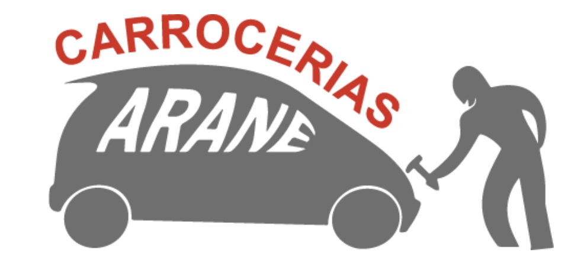

Más de 40 años de experiencia
Somos un taller mecánico y de chapa y pintura en Eibar. Nuestro equipo de mecánicos profesionales tratarán tu coche con el máximo interés para darte la solución que tu vehículo necesita. Llevamos a cabo el mantenimiento integral del automóvil. Reparamos cualquier desperfecto en la chapa de tu vehículo, desde abolladuras, roturas, rayones… Siempre con la mayor rapidez, pues somos expertos en carrocería rápida, disponemos el mejor equipo profesional y conocemos las últimas tecnologías del mercado.
Mecánica de vehículos
Nuestro equipo de mecánicos profesionales tratarán tu coche con el máximo interés para darte la solución que tu vehículo necesita. Llevamos a cabo el mantenimiento integral del automóvil.
Chapa y Pintura
Reparamos cualquier desperfecto en la chapa de tu vehículo … siempre con la mayor rapidez, pues somos expertos en carrocería rápida, y disponemos el mejor equipo profesional y las últimas tecnologías del mercado.
Podemos realizar una serie de operaciones especializadas para reparar y mejorar la apariencia de los vehículos, garantizando que salgan del taller en óptimas condiciones estéticas y funcionales.
Frenos, suspensión y escape
Con el paso del tiempo y el uso, las pastillas y los discos de freno se desgastan. Por eso, es recomendable mantener siempre el sistema de frenado en buen estado. Consúltanos para saber en que estado se encuentran los tuyos.
La suspensión proporciona a su vehículo una mayor adherencia y por tanto, más seguridad. Cuando estos no están en buen estado aceleran el desgaste de otras partes de tu vehículo, como por ejemplo los neumáticos.
El tubo de escape reduce el ruido, la temperatura y la salida de gases para así mejorar el rendimiento del motor de tu vehículo. En Carrocerías Arane podemos aconsejarte sobre el estado del tubo de escape y repararlo si es preciso.
En Carrocerías Arane, nos enorgullece no solo ofrecer servicios de reparación de alta calidad, sino también hacer nuestra parte para cuidar el medio ambiente al ofrecer al cliente la posibilidad de utilizar recambios de segunda mano en muchas de las reparaciones.
Esta práctica no solo nos permite ofrecer soluciones más económicas a nuestros clientes, sino que también contribuye a reducir el desperdicio de recursos y la contaminación ambiental. Al reutilizar piezas de automóviles en buen estado, estamos ayudando a prolongar su vida útil y reducir la demanda de nuevos productos.
Gracias por elegir Carrocerías Arane, donde el compromiso con el medio ambiente y la satisfacción del cliente van de la mano.